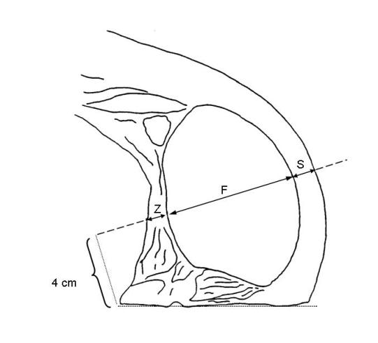

(Fundstelle: BGBl. I 2011, 1917)
Der Muskelfleischanteil des Schlachtkörpers wird anhand folgender Formel berechnet:
- MF=
60,98501 – 0,85831 ⋅ S + 0,16449 ⋅ F.
Dabei sind:
- MF=
Geschätzter prozentualer Muskelfleischanteil des Schlachtkörpers,
- S=
Rückenspeckdicke (einschließlich Schwarte) in mm, gemessen 7 cm seitlich der Trennlinie zwischen der zweit- und drittletzten Rippe,
- F=
Dicke des Rückenmuskels in mm, gleichzeitig und an der gleichen Stelle wie S gemessen.
Die Rückenspeckdicke und die Dicke des Rückenmuskels werden an Schweinehälften, die durch Spaltung des Schlachtkörpers längs der Wirbelsäule hergerichtet wurden, ermittelt (siehe Abbildung).
Bei Klassifizierungsgeräten, die aufgrund der spezifischen biologischen Eigenschaften eines Schlachtkörpers die Dicke des Rückenmuskels nicht direkt bestimmen können, wird anstatt des Fleischmaßes F ersatzweise das Fleischmaß F* für die Berechnung des Muskelfleischanteils verwendet. F* wird wie folgt berechnet:
- F*=
0,95 ⋅ G – 3.
Dabei sind:
- F*=
Hilfsgröße zur Schätzung der Dicke des Rückenmuskels in mm,
- G=
Gesamtmaß entspricht der Summe der Dicke des Rückenmuskels F und der Dicke des Zwischenrippengewebes Z (siehe Abbildung) und wird gleichzeitig und an der gleichen Stelle wie S in mm gemessen.
Die mit Hilfe von F* geschätzten Muskelfleischanteile sind im Protokoll gemäß § 3 dieser Verordnung deutlich zu kennzeichnen.
Messlinie im Kotelettquerschnitt zwischen der zweit- und drittletzten Rippe
